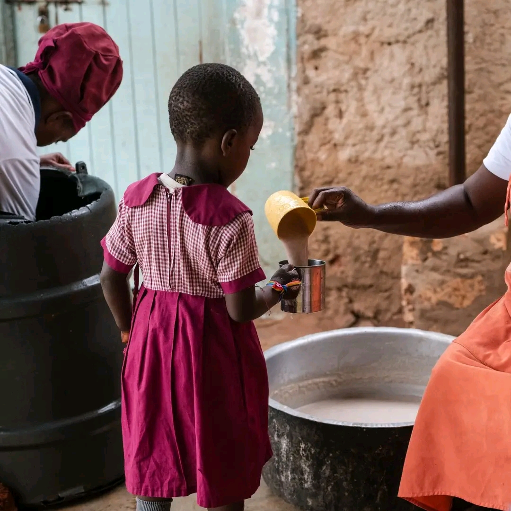
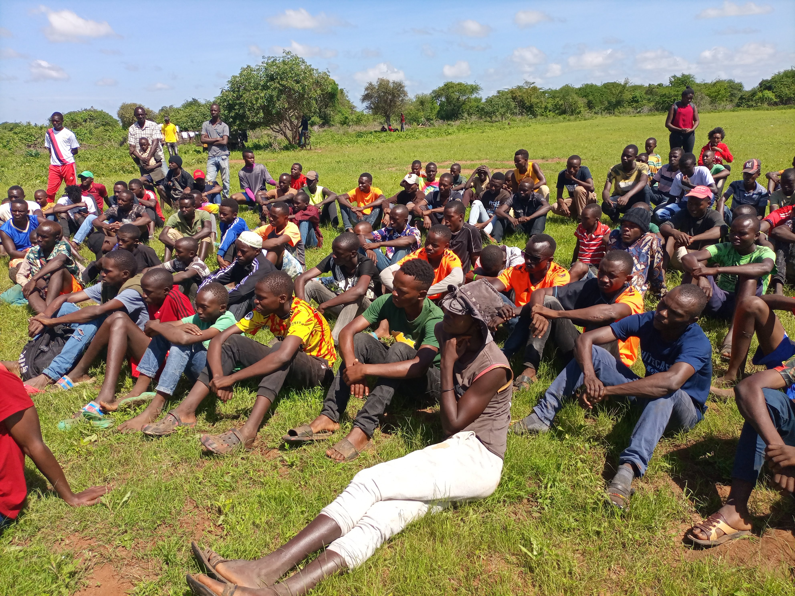
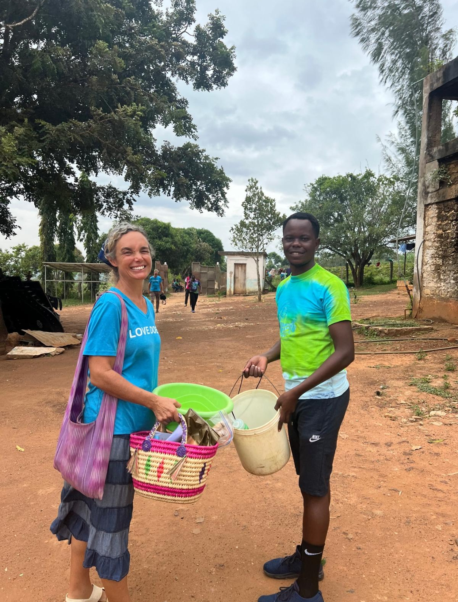

🌍 Community Engagement for Transformation
Published on 23rd August 2025

True transformation begins when communities come together, united by a shared vision of progress and dignity.
On 23rd August 2025, we organized a community engagement forum where leaders, parents, and youth gathered to
discuss the challenges and opportunities within our society. From education to health, from clean water to
youth empowerment, every voice mattered.
The discussions were lively, practical, and inspiring. What stood out most was the spirit of ownership —
community members realized that they are not just beneficiaries of programs but also active contributors to change.
This forum planted seeds of collective responsibility, where every action, no matter how small, contributes to
the bigger picture of growth. It was a reminder that sustainable development is not imposed from outside but built
from within, with everyone playing their part.
🍲 A Meal A Day Program
Published on 17th February 2025

In many communities, children go to school on empty stomachs, making it hard for them to learn, grow, and dream.
The A Meal A Day Program was started to change this reality by providing nutritious daily meals to vulnerable children.
Through this program, we serve a cup of Uji (porridge) every Tuesday, Thursday, and Saturday, giving children
the energy to focus in class and the strength to stay healthy.
What began as a small effort in just a few schools has now grown into a movement of hope, ensuring that children
can focus in class, stay healthy, and look forward to a brighter future. For many families, the program is more
than just food — it’s dignity, relief, and a reminder that they are not forgotten.
With every meal served, we are not just feeding bodies; we are nourishing futures.
⚽ Youth Sports for Empowerment
Published on 13th December 2024

Sports are more than just games — they are a powerful tool for uniting communities, building confidence, and
inspiring young people to reach their full potential.
In December 2024, we held a youth sports day that brought together young people from different schools and
neighborhoods. With football, volleyball, and athletics, the event was filled with energy, teamwork, and a spirit
of friendship.
The initiative wasn’t just about competition, but about mentorship. Coaches and mentors shared lessons on
discipline, resilience, and leadership — values that sports naturally instill. For many youth, this was a rare
opportunity to showcase their talents and realize that they can excel both on and off the field.
Through sports, we continue to raise a generation that is not only physically strong but also morally grounded
and socially responsible.
🌱 A Courtesy Visit by Martha Sales
Published on 19th May 2024

On 19th May 2024, we had the honor of hosting Martha Sales, a Christian missionary and mentor whose passion
for serving communities is both inspiring and practical. Her visit was part of the Life Program, an initiative
she has been nurturing to equip people with skills that go beyond academics — focusing on leadership, service,
and personal growth.
During her visit, Martha facilitated life skills training sessions, instilling Christian values of humility,
compassion, and integrity. She emphasized that true leadership begins with serving others, just as Christ Himself
demonstrated. She reminded us that when leaders step forward with faith, dedication, and love, they empower whole
communities to rise together.
The sessions were not only interactive and practical but also deeply spiritual, encouraging young people to root
their lives in faith while pursuing excellence in service. Martha’s message was clear: we are called to be agents
of transformation, shining as examples of hope in our schools, homes, and neighborhoods.
Her visit left a lasting impact — planting seeds of courage, responsibility, and faith. For many, it was a turning
point; a reminder that every act of service is also an act of worship, and that true change begins with the
willingness to lead by example in Christ.
{kind=link}
{kind=link}
{kind=link}